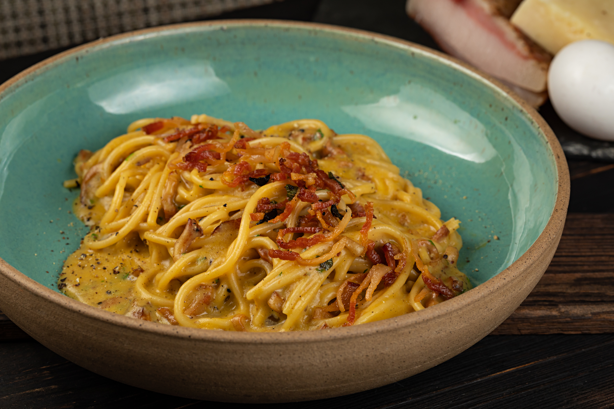

Carbonara

A beautiful version of the italian classic Carbonara
Ingredients
- Spaghetti - 150g;
- Guanciale - 50g;
- Pecorino Romano Cheese - 50g;
- 2 eggs;
- Freshly ground black pepper.
Steps
- Boil the water in a large pan. Don't forget to salt it before putting the pasta
- Cook the pasta to al dente
- Chop the guanciale in cubes and finely grate the pecorino cheese
- Beat 1 whole egg and 1 egg gem. Mix them with the cheese and the black pepper and reserve it
- Fry the guanciale until it's golden and crispy and let it rest in the pan
- When the pasta is ready, lift it from the cooking water with a pasta fork or tongs and put it in the pan with the guanciale. You will want to put some of the cooking water in the pan aswell
- Take the pan out off the heat and let it cool down a bit and then mix the pasta and the guanciale with the eggs and cheese mixture
- Add extra pasta water and keep mixing until the eggs mixture becomes a creamy sauce
- Twist the pasta on to a serving plate or bowl. Grate extra pecorino and black pepper on top and serve it immediately